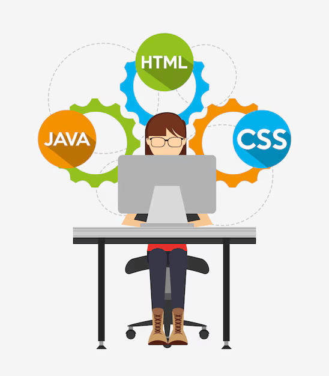
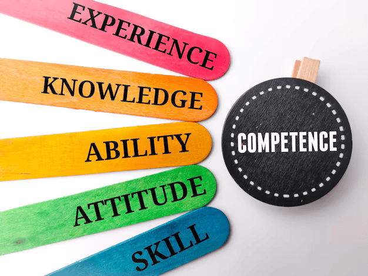
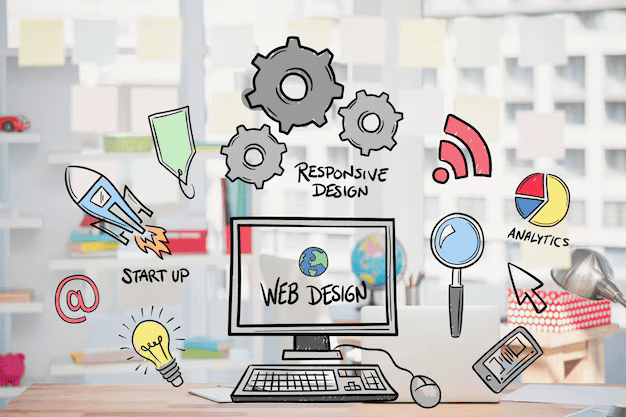

Parcours académique et diplomes
2024 - 2025: Première année en Informatique à l'ESTM
2023 - 2024: Terminale S2 à Machala
2022 - 2023: Première S2 à Machala
2021 - 2022: Seconde S à Mikado
2020 - 2021: Troisième à Mikado
2019 - 2020: Quatrième à Mikado
2018 - 2019: Cinquième à Sainte Bernadette
2017 - 2018: Sixième à Sainte Bernadette
2011 - 2017: Primaire à Tambacounda
Diplômes et Certificats
Baccalauréat
BFEM
CFEE

Compétences techniques
Compétences en Frontend
HTML
CSS
Développement web
Création de pages web statiques avec HTML et CSS
Outils de technologies
Visual Studio Code
Réseaux et cybersécurité
Concepts fondamentaux des réseaux (modèle OSI, adresse IP)
Initiation aux protocoles de communication (TCP/IP, HTTP, DNS)

Compétences transversales
Travail d'équipe
Développé au travers de projets en groupe pendant mes études.
Communication
Améliorée par des présentations orales dans le cadre académique.
Résolution de problèmes
Acquise par la pratique de la programmation et des projets pratiques.
Gestion du Temps
Apprise lors de la gestion de projets en parallèle des cours.
Adaptabilité
Développée en apprenant de nouveaux langages et outils rapidement pour mes projets.

Centres d'intérêt professionnels
Je suis particulièrement intéressée par le développement web et la
cybersécurité.
Dans le cadre de ma première année en génie logiciel et administration réseaux, j'ai eu l'occasion
de découvrir les bases du développement web à travers des projets académiques.
J'ai appris à créer des pages web interactives et à optimiser leur structure. En parallèle, j'ai
développé un intérêt pour la cybersécurité, un domaine crucial pour la protection des données. Bien
que
je
n'aie pas encore réalisé de projet spécifique en cybersécurité, je m'efforce de comprendre les
principes
de
base tels que les attaques courantes et les bonnes pratiques de sécurité, afin de pouvoir les
appliquer
dans
mes futurs projets de développement.